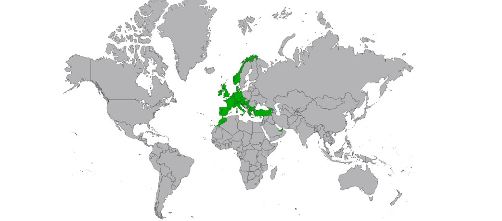

„Веднъж годишно пътувайте до място, на което никога не сте били преди!“
~ Далай Лама

Здравейте! Аз се казвам Борис Добрев и съм на 17 години. Пътуването е моя страст, което е резултат от пътешественическия дух на моето семeйство. Обичам да пътувам, макар това изказване да важи за почти всеки човек на тази Земя, ако не и за всеки. Първото ми пътуване напарвих с мама и тате на 6-годишна възраст, когато полетях със самолет до Брюксел. Това първо пътуване, този първи полет сякаш запали у мен искрата на пътешествието. От тогава до сега съм посетил и обиколил 29 държави на 3 континента. Пътешествието се превърна в мое хоби, но също успя да ме отведе до нови светове, култури и народи. Светът е голям и има още много какво да се види.
Заради пандемията от COVID-19 плановете на мен и моето семейство бяха отчасти провалени. Въпреки това пандемията ни даде възможност да обиколим някои непознати кътчета на България. С нетърпение очаквам момента, когато ще можем отново да пътуваме спокойно и свободно. Вярвам, че бъдещето ще бъде светло, а пътешественическият дух ще ни води напред към нови хоризонти.
По-долу съм приложил карта с всички страни, които съм посетил.
